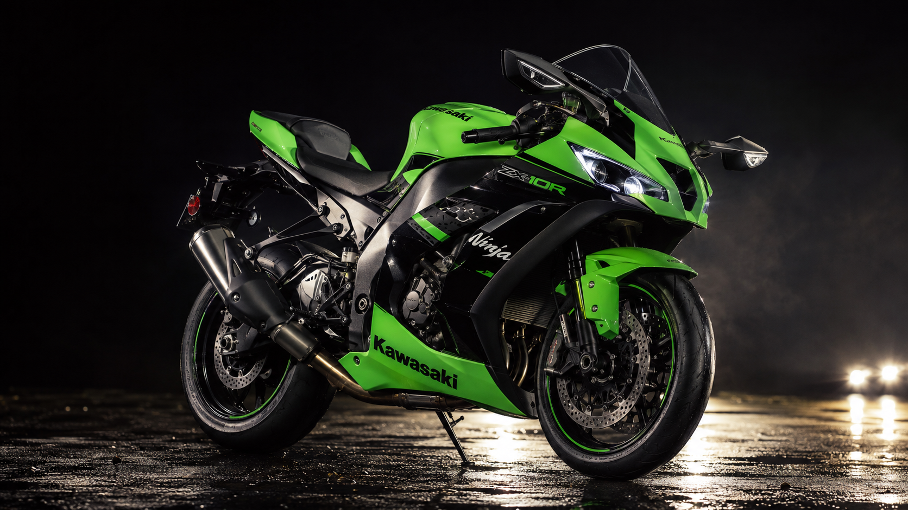

Servicio Técnico Especializado
Potencia, precisión y tecnología robótica avanzada para tu motocicleta.
⚡ DIAGNÓSTICO DIGITAL AVANZADO
En Mecamotor no adivinamos las fallas ni te hacemos gastar de más; las escaneamos en tiempo real con tecnología robótica de punta para garantizar el máximo rendimiento.
🏍️ Precisión Electrónica
Escaneo computarizado de sensores, inyección y compresión con datos exactos en pantalla.
📋 Transparencia Total
Historial clínico digital por placa. Mira el pasado de tu moto desde la web y paga solo lo justo.
⚙️ Ingeniería de Ruta
Mantenimientos milimétricos bajo manual de fabricante para garantizar la máxima potencia.